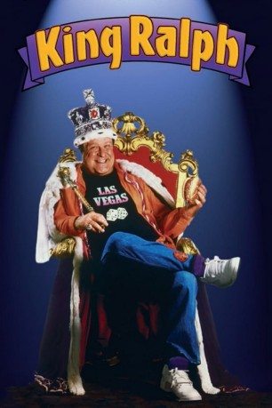
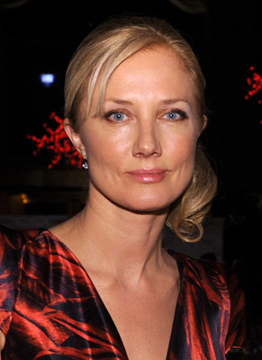
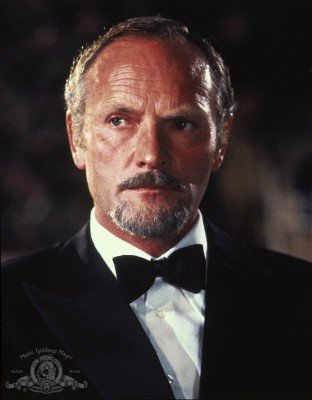
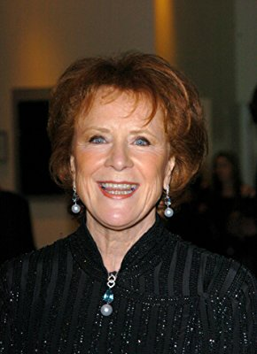
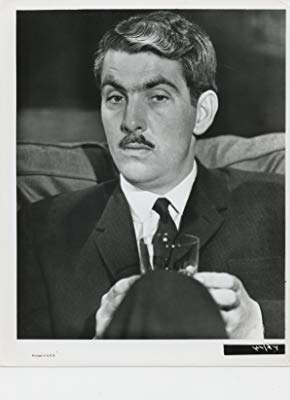

#8339 King Ralph
 
 IMDB-Wertung: 5.2 / 10
IMDB-Wertung: 5.2 / 10  Tomatometer: 20
Tomatometer: 20  Metascore: 0
Metascore: 0 
Er ist fett, unmöglich angezogen, ein drittklassiger Pianist, außerdem Amerikaner - und der einzig legitime Nachfolger der dahingerafften britischen Königsfamilie. Unter King Ralph I. erschüttern fetzige Rock’n Roll Klänge die ehrwürdigen Mauern von Buckingham Palace, donnert die Bowlingkugel übers spiegelblanke Parkett, steigt der König mit der Krone in die Badewanne und hohe Gäste werden höchst unprotokollarisch behandelt…
Jahr: 1991
Dauer: 96 Minuten
FSK: 6
Land: USA Studio: Universal PicturesTonspuren: DTS - ,
Untertitel: Deutsch,
Auflösung: 1080p (1920x1040) Größe: 7813 MB
Genre: Komödie, Liebe
Regisseur: David S. Ward
Drehbuch: Emlyn Williams
Soundtrack: James Newton Howard
Darsteller:
 John Goodman als Ralph
John Goodman als Ralph Peter O'Toole als Willingham
Peter O'Toole als Willingham John Hurt als Graves
John Hurt als Graves Camille Coduri als Miranda
Camille Coduri als Miranda Richard Griffiths als Phipps
Richard Griffiths als Phipps Leslie Phillips als Gordon
Leslie Phillips als Gordon-  Joely Richardson als Princess Anna
-  Julian Glover als King Gustav
-  Judy Parfitt als Queen Katherine
- Rudolph Walker als King Mulambon
 Roger Ashton-Griffiths als Royal Photographer
Roger Ashton-Griffiths als Royal Photographer- Brian Greene als Ed Mayes
- Ian Gelder als Riding Instructor
- Sally Nesbitt als Onlooker
- Topaz Hasfal-Schou als 'Dukettes' Back-Up Singer
- Jason Richards als Baby Ralph II
- Terence Dackombe als Royal Courtier (uncredited)
 Tina Simmons als Royal Dignitary (uncredited)
Tina Simmons als Royal Dignitary (uncredited)-  James Villiers als Hale
- Niall O'Brien als McGuire
- Ed Stobart als Dysentery
- Gedren Heller als Punk Girl
- Michael Johnson als Hamilton
- Ann Beach als Miranda's Mother
- Jack Smethurst als Miranda's Father
- Dallas Adams als MC at Strip Club
- Adele Lakeland als Fanny Oakley
- Haydon-Pearce Josanne als Chorus Girl
- Vanessa Lee Hicks als Chorus Girl
- Jazzi Northover als Chorus Girl
- Dawn Spence als Chorus Girl
- Guy Fithen als Bouncer
- Cameron Blakely als Graves' Photographer
- Caroline Paterson als Counter Girl
- Richard Whitmore als Male Newscaster
- Jennie Stoller als Female Newscaster
- Kirk St. James als Sax Player
- Tim Seely als King of England
- Alison McGuire als Queen of England
- Gareth Forwood als Duke
- Alan McMahon als Assistant Photographer
- Richard Bebb als Gamekeeper
- David Stoll als Butler
- Chantal Claire als 'Dukettes' Back-Up Singer
- Charlotte Pyecroft als 'Dukettes' Back-Up Singer
- Paul Beach als Tailor
- Angus MacKay als Assistant Tailor
- Barrie Holland als Palace Dignitary (uncredited)
- Roy Lansford als Guest Dignitary (uncredited)
- Henry Roberts als Researcher (uncredited)
Datei: X:\1991\King Ralph (1991, FSK6, 1920x1040).mkv seit 25.02.2018
Festplatte: HD 1987-1991
 Es gibt insgesamt 53 Filme in der Gruppe '1991'
Es gibt insgesamt 53 Filme in der Gruppe '1991'